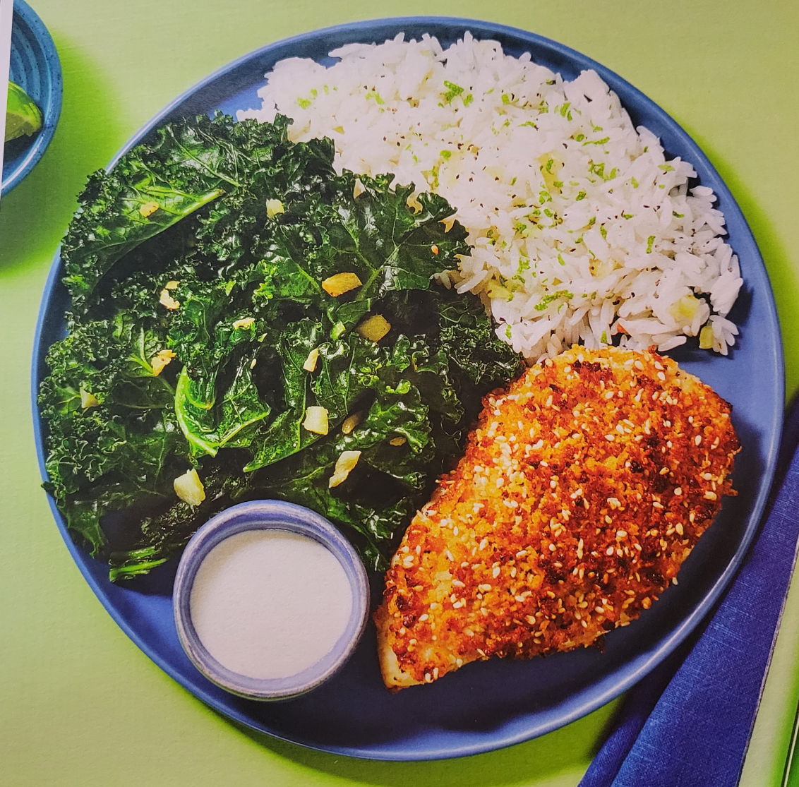

Home
Toasted Sesame-Panko Chicken

Ingredients
- 1/4 cup - Panko Breadcrumbs
- 1 TBSP - Sesame Seeds
- 1 tsp - Garlic Powder
- 1 Thumb - Ginger
- 1 cup - Jasmine Rice
- 10 oz - Chicken Cutlets
- 4 TBSP - Mayonnaise
- 1 tsp - Wasabi Paste
- 1 - Lime
- 4 oz - Kale
- 1 Clove - Garlic
Bust Out
- Large pan
- Small bowl
- Small pot
- Paper towels
- Baking sheet
- Zester
- Salt
- Pepper
- Cooking oil (4 tsp)
- Sugar (1/4 tsp)
- Butter (2 TBSP)
1) Make Crust
- Adjust rack to top position and preheat oven to 425 degrees
- Melt 1 TBSP butter in a large pan over medium-high heat
- Add panko, sesame seeds, garlic powder abd a pinch of salt and pepper
- Cook, stirring, until golden and fragrant, 1-2 minutes
- Turn off heat; transfer to a small bowl
- Wipe out pan
2) Start Prep & Cook Rice
- Wash and dry produce
- Peel and mince or grate ginger
- Heat a drizzle of oil in a small pot over medium-high heat
- Add half of the ginger and cook until fragrant, 30 seconds
- Add rice, 3/4 cup of water, and a big pinch of salt
- Bring to a boil, then cover and reduce heat to low
- Cook until rice is tender and water has evaporated, 15-18 minutes
3) Coat & Roast Chicken
- Meanwhile, pat chicken dry with paper towels and season all over with salt and pepper
- Place on a lightly oiled baking sheet
- Evenly spread top of each cutlet with 1/2 TBSP mayonnaise
- Mound with toasted panko mixture, pressing firmly to adhere
- Wipe out bowl
- Roast on top rack until chicken is golden brown and cooked through, 15-20 minutes
4) Finish Prep & Make Sauce
- While chicken cooks, zest and quarter lime
- Remove and discard any large stems from kale
- Peel and mince or grate garlic
- In a bowl used for panko, combine half the wasabi paste, remaining mayonnaise, 1/4 tsp sugar, and a squeeze of lime juice
- Add water 1 tsp at a time until sauce reaches a drizzling consistency
- Season with salt and pepper if desired
5) Cook Kale
- Heat a large drizzle of oil in pan used for panko over medium-high heat
- Add kale and season with salt and pepper
- Cook, stirring occasionally, until almost tender, 3-5 minutes
- Stir in garlic and remaining ginger; cool until fragrant and kale is tender, 1-2 minutes
- Remove pan from heat and stir in a squeeze of lime juice
- Cover to keep warm
6) Finish & Serve
- Fluff rice with a fork; stir in lime zest and 1 TBSP butter
- Season with salt and pepper
- Divide chicken, rice, and kale between plates
- Serve wasabi sauce on the side for dipping chicken, aling with remaining lime wedges